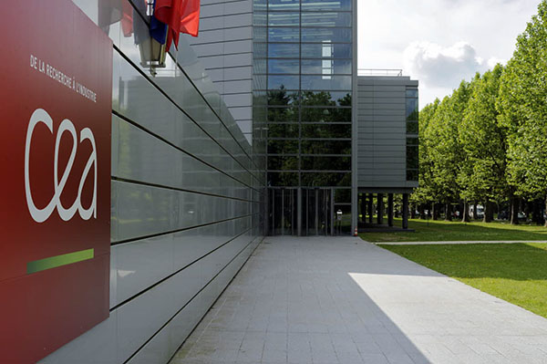

Computing Education Academy
Useful Links:
Should Computer Science Be Required in K-12?
The state of Computer education for K-12 Students
Importance of Computer Education for K-12 students.
Motivating Fundamental Computer Science concepts with App Inventor
Free Educational videos for k-12 students
Case Study in K-12 Classrooms
Making Computer Science fundamental to k-12 students
Landscape of Computer Science for k-12 students in usa
Deconstruction of Computer Science teachers for k-12 students
Presentation for computer education importance
Home
About
Contact
Apply Now!
Links